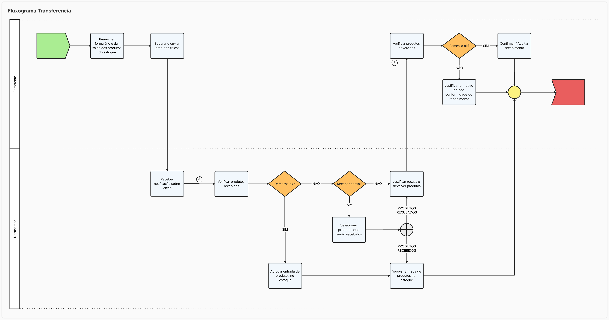

Transferência de Produtos entre Estabelecimentos
História de Usuário
Como usuário do sistema de gestão farmacêutica,
Quero realizar transferências de produtos entre estabelecimentos,
Para que eu possa otimizar o uso de estoque, evitar desperdícios e garantir a disponibilidade de produtos onde houver maior necessidade.
Descrição
A funcionalidade de Transferência de Produtos entre Estabelecimentos permite que unidades de saúde vinculadas a um mesmo ente federativo (como municípios, estados ou entidades) realizem o remanejamento de medicamentos e insumos de forma controlada, rastreável e integrada.
A funcionalidade tem como objetivo evitar o desperdício de medicamentos, melhorar a alocação de recursos e otimizar a gestão de estoques. O sistema controla todas as etapas da transferência garantindo integridade, validação de prazos de validade, controle de status, e registro de divergências. Além disso, promove a atualização automática de estoques somente após o aceite e armazenamento no destino, assegurando rastreabilidade e confiabilidade nas movimentações.
Regras de Negócio
- Impedir o envio de produtos:
- com validade vencida;
- Emitir alerta de validade vencida;
- com prazo de validade inferior a 3 meses;
- Emitir alerta de validade próxima;
- com validade vencida;
- Fluxo de status para transferências do tipo
Distribuição sem RequisiçãoeTransferência:Aguardando envio- Quando uma solicitação de movimentação é iniciada. Cada solicitação gera um ID.
Enviado- Medicamentos transferidos e em trânsito. Momento onde os itens saem do estoque da origem e passam a ser um estoque “em trânsito”.
Recebido- Medicamentos chegaram ao estabelecimento de destino. Estabelecimento confirma e ocorre a entrada automática no estoque do estabelecimento de destino.
Recebido parcial- Quando o estabelecimento destino identifica que algum item não deve ser recebido. Problemas de validade, quantidade, outros. A justificativa é obrigatória.
Recusado- Quando o estabelecimento destino identifica que todos os itens não estão em condições de serem recebidos. Problemas de validade, quantidade, outros. A justificativa é obrigatória.
- Justificativas devem ser preenchidas caso haja divergências no envio / recebimento;
- Envios / recebimentos sempre deverão gerar registros nos estabelecimentos envolvidos no processo;
- Atualizar automaticamente o estoque após alteração do status da transferência para
Recebido; - No caso de
Aceito parcial, o sistema somente efetivará a atualização do estoque de maneira automática após a confirmação de todos os estabelecimentos envolvidos, conforme fluxograma da funcionalidade;
Fluxograma
Fluxo Transferência entre estabelecimentos 
{kind=link}
Protótipo 001
(inserir link do protótipo não funcional nabegável via adobe XD ou similares)
Critérios de Aceite
- O usuário somente poderá acessar a funcionalidade caso tenha permissão; RGN001
- Acesso
- Menu > Movimentações > Saídas > Novo
- O sistema deve validar todos os campos obrigatórios antes do envio.
- Estoques atualizados apenas após conferência e aceite pelo destino.
- Apenas registros sem movimentações podem ser editados.
- Alertas visíveis para destinatários com solicitações pendentes.
Modelo de Dados
| Nível | Atributo | Descrição | Cardinalidade | Tipo de Dado | Tamanho | Formato / Observação |
|---|---|---|---|---|---|---|
| Campo | Tipo | Obrigatório | Observações |
|---|---|---|---|
| ID Transferência | UUID | Sim | Gerado automaticamente |
| Estabelecimento Origem | Referência | Sim | CNES e nome |
| Estabelecimento Destino | Referência | Sim | CNES e nome |
| Produto | Referência | Sim | Código OBM ou EAN |
| Lote | Texto | Sim | |
| Validade | Data | Sim | Alerta se < 3 meses. Rejeitar se vencido |
| Quantidade | Inteiro | Sim | |
| Motivo da Solicitação | Texto | Sim | |
| Status | Enum | Sim | Aberto, Enviado, Finalizado, etc. |
| Justificativa | Texto | Condicional | Obrigatória para recusa, divergência ou devolução |
| Usuário Solicitante | Referência | Sim | Nome e ID do operador |
| Data/Hora da Solicitação | DateTime | Sim | Registro automático |